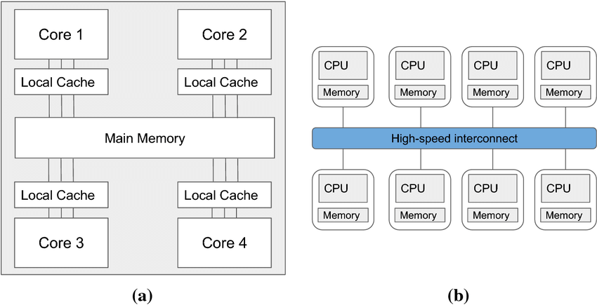
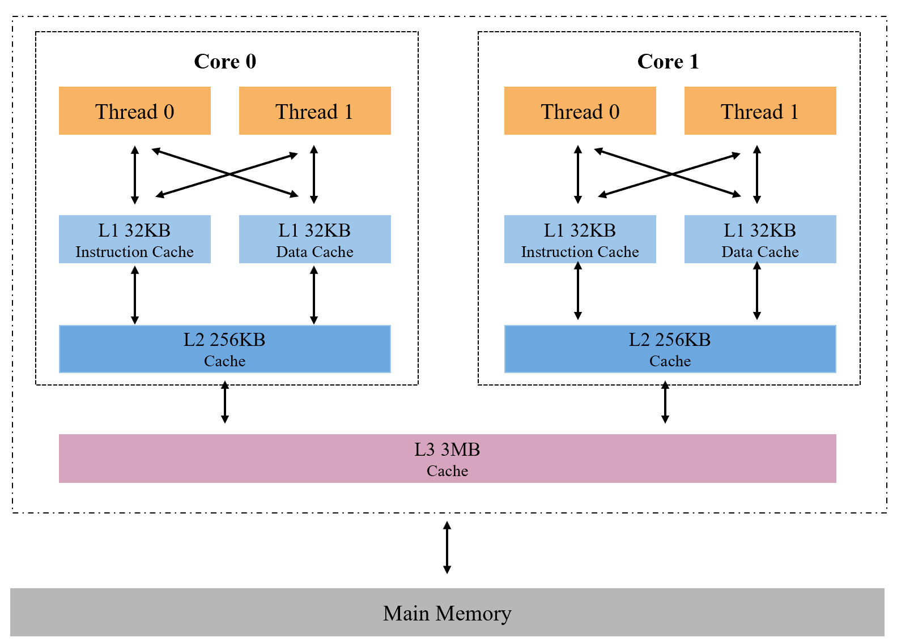

Multicore and Multi-CPU shared memory systems
Contents
2.1. Multicore and Multi-CPU shared memory systems#
In this section, we will introduce the MIMD architecture, multi-CPU systems, multi-core systems, and multithreading. Through this section, the readers will understand the structure of computers for parallel computing. To lay the foundation for the introduction to OpenMP programming.
2.1.1. MIMD Architecture#
Multiple Instruction Multiple Data(MIMD) architecture consists of processors that operate independently and asynchronously from one another. MIMD architecture systems consist of many processors that can have much common memory or memory that is exclusive to one. These terms mean many processes can execute instructions at any time with any piece or segment of data. MIMD architecture consists of two different types of architecture: Shared Memory MIMD architecture and Distributed Memory MIMD architecture.
Shared Memory MIMD systems have the following characteristics. Shared Memory MIMD groups processors and memory. Any processor can access that memory through a communication channel designated by the programmer. Finally, the memory addresses are shared between processors. On the other hand, Distributed Memory MIMD systems have their own set of characteristics. First, memory and processors are grouped together in pairs known as processing elements. Which is linked to other PEs through the use of communication channels. Second, each PE communicates with each other by sending messages, communication isn’t as open like that of a Shared Memory MIMD system.
The multi-CPU systems and multicore systems we introduce next both belong to the MIMD Architectures.
2.1.2. Multi-CPU Systems#
A multiple CPU machine is made up of two or more CPUs, sharing system bus, memory and I/O. Multiple CPU machines were the original attempt at increasing computational power but since the birth of Multicore machines, most consumer computers have adopted that approach. That being said there is still a purpose for Multiple CPU machines, you will find them in supercomputers, servers, and other nonconsumer equipment that need raw computing power.
Multi-CPU systems can be divided into two types according to different memory systems, one uses a shared memory system, and the other uses a distributed memory system. As shown below:

On the left is a diagram of a multi-core CPU, where each core has a small local cache, but all cores have direct access to large shared memory. The diagram on the right shows a distributed memory system where multiple CPUs, each with their own local memory, are connected via a high-speed network. Distributed memory systems are common in distributed clusters and can communicate using MPI. Since OpenMP only supports shared memory systems, we won’t discuss distributed memory systems here.
2.1.3. Multicore Systems#
Multicore machines just mean that the computer has “n” number of central processing units. Although these processors have multiple cores they still fit in one CPU slot on a motherboard all using the same power, cooling, and other hardware.
Let’s look at a multi-core example as shown below: 
Only two cores are shown in this diagram, but real multi-core processors tend to use more cores. Multiple threads can be loaded onto a core for execution. Each core has L1 and L2 caches that only it can access, but they share the same memory system. For multi-core systems, the difference from multi-CPU systems is that all processors are on the same chip. The operating system treats each core as a separate processor, and each core can work independently.
2.1.4. Comparation of Multi-CPU Systems and Multicore Systems#
Both systems have their own advantages and disadvantages.
For multi-CPU systems:
Advantages:
Multiple processors can work at the same time, and the throughput will be greatly increased.
When a processor stops working, other processors can help to complete the work, which greatly improves the reliability of the entire system.
Disadvantages:
Multiple processors work at the same time, and the coordination between them becomes very complicated.
Buses, memory and I/O devices are shared. So if some processor is using some I/O, the other processor has to wait for its turn, which will result in lower throughput.
Increased requirements for memory devices. In order to make all processors work efficiently at the same time, we need to have a large main memory, which increases the cost.
For multi-core systems:
Advantages:
Multiple cores are on the same die, which results in higher cache coherence.
The core is very energy efficient, so it can get more performance with less power consumption.
Disadvantages:
We don’t get as good performance as a multi-CPU system. For example, if we have two cores on our CPU, we can theoretically get twice the speedup compared to a single core, but in practice we can only get 70-80% of the ideal speedup.
Some operating systems do not provide good support for multi-core systems.
But the readers may have noticed that although the two approaches are slightly different in how fast the processors work together and how they access memory, their design is very similar. And the important thing is that the working logic of OpenMP is the same, which is to create multiple threads and allocate them on different cores. Therefore, we treat them as the same.
2.1.5. Multithreading#
Next we will introduce a concept that is very important to OpenMP programming - multithreading. Multithreading is a technology that implements concurrent execution of multiple threads on software or hardware. Thread is usually a concept at the software level and is the actual operating unit in the operating system process. We can divide one huge task into multiple small tasks at the software level and load these tasks on different threads for execution.
The multi-threaded concurrency is a pseudo-concurrency in a single-core CPU, which is just a quick switch between multiple tasks through the scheduling strategy. Implementing multithreading on a single-core CPU is essentially an efficient use of CPU core, and try the best to make the CPU core always running at full capacity. The interaction with the memory is dragging down the program’s execution speed. Moreover, multithreading can hide part of the interaction time through thread scheduling. The hyper-threading technology essentially simulates multiple logical units in one CPU core. It is an optimization of threads based on the premise that each thread in multithreading is not efficiently used to improve efficiency further. It is used on Intel’s top CPUs to pursue the ultimate efficiency.
The multi-threading in the multi-core CPU is the actual parallel execution of threads. Even if a core is fully occupied, other cores are not affected and can handle thread scheduling. When the number of threads is less than the number of CPU cores, only some of the cores will work concurrently. When the number of threads is more than the number of cores, they will be loaded on the cores for execution according to a particular scheduling strategy.
We still use this figure as an example to show the architecture of a multi-core CPU that supports hyper-threading technology，Suppose there are 12 cores in the CPU, and we create 24 threads. Since the CPU shown in the figure supports hyper-threading technology, two threads are loaded into one core for execution, so 24 threads can be executed simultaneously. If we have 48 threads, 24 will be executed first and the others will be queued. Whenever a core completes its current task, the first two threads in the queue are loaded onto that core for execution. The cache in the CPU is an essential part of ensuring that threads can access data at high speed. There are two types of L1 caches which are L1i, which stores instructions, and L1d, which stores data. Different threads in the same core share the L1 and L2 cache, and different cores communicate through the L3 cache. The same thread can only run on one CPU core at one time.